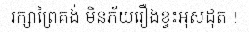
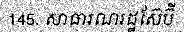
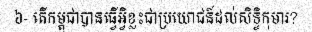
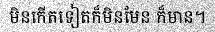
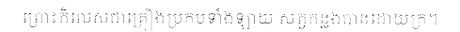
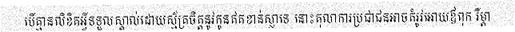

🎯 Accuracy Results
78.2%
Character-level
Accuracy
sample_0000
Ground Truth: ដូច្នេះថា នែអាវុសោអានន្ទ លោកម្ចាស់ពេញហៅជាមានលាភ នែអាវុសោអានន្ទ អត្តភាពជាមនុស្ស លោកម្ចាស់ក៏បានដោយល្អហើយ ព្រោះថា ព្រះសាស្តា បានអភិសេកលោកម្ចាស់
Prediction: ដូច្នេះថា នែអាវុសោរានន្ទ លោកម្ចាស់ពេញហៅជាមានលាក នែអាវុសោអានន្ទ អត្តភាពជាមនុស្ស លោកម្ចាស់ក៏បានដោយល្អហើយ ព្រោះថា ព្រះសាស្តា បានអភិសេកលោកម្ចាស់
Length: 140 chars, 142 tokens |
Size: 1196x32 px |
Match: ❌ Incorrect
sample_0001
Ground Truth: នាមធ្យមភាគគឺជាវិធីមួយដើម្បីរកមើលតម្លៃកណ្តាលនៃទិន្នន័យមួយក្រុម។ យើងក៏អាចបង្កើតក្រាហ្វិកសាមញ្ញៗដូចជាគំនូសតាងសសរឬគំនូសតាងចំណិតដើម្បីបង្ហាញទិន្នន័យ។
Prediction: នាមធ្យមភាគគឺជាវិធីមួយដើម្បីរកមើលតម្លៃកណ្តាលនៃទិន្នន័យមួយក្រុម។ យើងក៏អាចបង្កើតក្រាហ្វិកសាមញ្ញៗដូចជាគំនូសតាងសសរឬគំនូសតាងចំណិតដើម្បីបង្ហាញទិន្នន័យ។
Length: 145 chars, 147 tokens |
Size: 1425x32 px |
Match: ❌ Incorrect
sample_0002
Ground Truth: ការសោយអារម្មណ៍ព្រោះរម្ងាប់សញ្ញាជាបច្ច័យក៏មាន ឆន្ទៈមិនរម្ងាប់ក៏មាន វិតក្កៈមិនរម្ងាប់ក៏មាន សញ្ញាមិនរម្ងាប់ក៏មាន
Prediction: ការសោយអារម្មណ៍ព្រោះរម្ងាប់សញ្ញាជាបច្ច័យក៏មាន ឆន្ទៈមិនរម្ងាប់ក៏មាន វិតក្កៈមិនរម្ងាប់ក៏មាន សញ្ញាមិនរម្ងាប់ក៏មាន
Length: 109 chars, 111 tokens |
Size: 491x32 px |
Match: ✅ Correct
sample_0003
Ground Truth: ដី។លើសពីនេះការសិក្សាបានវាយតម្លៃលើខ្សែសង្វាក់ផ្គត់ផ្គង់សម្ភារសំណង់ដោយផ្តោតលើគុណភាពនិងប្រសិទ្ធភាពនៃការដឹកជញ្ជូន។រាល់ដំណើរការគឺស្ថិតក្រោមការត្រួតពិនិ
Prediction: ដី។លើសពីនេះការសិក្សាបានវាយតម្លៃលើខ្សែសង្វាក់ផ្គត់ផ្គង់សម្ភារសំណង់ដោយផ្តោតលើគុណភាពនិងប្រសិទ្ធភាពនៃការដឹកជញ្ជូន។រាល់ដំណើរការគឺស្ថិតក្រោមការត្រួតពិនិ
Length: 146 chars, 148 tokens |
Size: 1127x32 px |
Match: ✅ Correct
sample_0004
Ground Truth: ៗរវាងដែកទឹកនិងអុកស៊ីសែនដែរ។សារធាតុទាំងអស់ត្រូវបានបង្កើតឡើងពីភាគល្អិតតូចៗបំផុតហៅថាអាតូម។អាតូមទាំងនេះតូចណាស់រហូតយើងមើលមិនឃើញដោយភ្នែកទទេបានឡើយ។នៅពេលដែល
Prediction: ចរវាងដែកទឹកនិងអុកស៊ីសែនដែរ។សារធាតុទាំងអស់ត្រូវបានបង្កើតឡើងពីភាគល្អិតតូចៗបំផុតហៅថាអាតូម។អាតូមទាំងនេះតូចណាស់រហូតយើងមើលមិនឃើញដោយភ្នែកទទេបានឡើយ។នៅពេលដែល
Length: 148 chars, 150 tokens |
Size: 1533x32 px |
Match: ❌ Incorrect
sample_0005
Ground Truth: ប្រើប្រាស់បាន។ការគណនាតម្លៃមធ្យមភាគ,ការរកមើលតម្លៃដែលកើតឡើងញឹកញាប់ជាងគេឬការបង្កើតក្រាហ្វិកសាមញ្ញៗដូចជាគំនូសតាងជាដើមសុទ្ធតែជាវិធីងាយៗដើម្បីបង្ហាញទិន្ន
Prediction: ប្រើប្រាស់បាន។ការគណនាតម្លៃមធ្យមភាគ,ការរកមើលតម្លៃដែលកើតឡើងញឹកញាប់ជាងគេឬការបង្កើតក្រាហ្វិកសាមញ្ញៗដូចជាគំនូសតាងជាដើមសុទ្ធតែជាវិធីងាយៗដើម្បីបង្ហាញទិន្ន
Length: 147 chars, 149 tokens |
Size: 1350x32 px |
Match: ✅ Correct
sample_0006
Ground Truth: ព្រោះប្រារព្ធអ្វី។ ម្នាលភិក្ខុទាំងឡាយ បុគ្គលពួកមួយ ក្នុងលោកនេះ ជាសមណៈ ឬព្រាហ្មណ៍ អាស្រ័យនូវការព្យាយាម ជាគ្រឿងដុតកំដៅកិលេស អាស្រ័យនូវការព្យាយាម
Prediction: ព្រោះប្រារព្ធអ្វី។ ម្នាលភិក្ខុទាំងឡាយ បុគ្គលពួកមួយ ក្នុងលោកនេះ ជាសមណៈ ឬព្រាហ្មណ៍ អាស្រ័យនូវការព្យាយាម ជាគ្រឿងដុតកំដៅកិលេស អាស្រ័យនូវការព្យាយាម
Length: 142 chars, 144 tokens |
Size: 1125x32 px |
Match: ✅ Correct
sample_0007
Ground Truth: សាសនាដំបូងរបស់ចំប៉ាគឺសាសនាហិណ្ឌូដែលទទួលឥទ្ឋិពលពីឥណ្ឌា។ តែក្រោយមកដោយសារ ពាណិជ្ជករអារ៉ាប់តែងតែមកឈប់សំចតតាមឆ្នេរសមុទ្រចំប៉ាមុននឹងទៅប្រទេសចិន
Prediction: សាសនាដំបូងរបស់ចំប៉ាគឺសាសនាហិណ្ឌដែលទទួលឥទ្ធិពលពីឥណ្ឌា។ តែក្រោយមកដោយសារ ពាណិជ្ជកអអារ៉ាប់តែងតែមកឈប់សំចតកាមច្រេសសមុទ្រចំប៉ាមុននឹងទៅប្រទេសចិន
Length: 137 chars, 139 tokens |
Size: 631x32 px |
Match: ❌ Incorrect
sample_0008
Ground Truth: (ក៏ប្រើប្រាស់ចីវរហួសពុទ្ធានុញ្ញាត គឺប្រើប្រាស់ចីវរបីត្រៃ) ចូលទៅកាន់ស្រុក (ស្លៀកដណ្តប់) ចីវរមួយត្រៃ នៅក្នុងអារាម (ស្លៀកដណ្តប់) ចីវរមួយត្រៃ
Prediction: (ក៏ប្រើប្រាស់ចីវរហួសពុទ្ធានុញ្ញាត គឺប្រើប្រាស់ចីវរបីត្រៃ) ចូលទៅកាន់ស្រុក (ស្លៀកដណ្តប់) ចីវរមួយត្រៃ នៅក្នុងអារាម (ស្លៀកដណ្តប់) ចីវរមួយត្រៃ
Length: 137 chars, 139 tokens |
Size: 844x32 px |
Match: ✅ Correct
sample_0009

Ground Truth: ឌ្ឍន៍សហគមន៍មិនមែនដើរតួជាអ្នកជំនាញដែលផ្តល់ដំណោះស្រាយស្រាប់នោះទេប៉ុន្តែជាអ្នកជំរុញដែលបង្កើតបរិយាកាសសម្រាប់កិច្ចសន្ទនាការចែករំលែកចំណេះដឹងនិងការសម្រេចចិ
Prediction: ឌ្ឍនីសហគមន៍មិនមែនដើរតួជាអ្នកធំនាញដែលផ្តល់ដំណោះស្រាយ ស្រាប់នោះទេបុន្តែជាអ្នកជំរុញដែលបង្កើតបរិយាកាសសម្រាប់កិច្ចសន្តនាការចែករំលែកចំណេះដឹងនិងការសម្រេចចិ
Length: 148 chars, 150 tokens |
Size: 1497x32 px |
Match: ❌ Incorrect
sample_0010
Ground Truth: ត្រូវផ្តន្ទាទោសដាក់ពន្ធនាគារពីរ ២ (ពីរ) ឆ្នាំ ទៅ ៥ (ប្រាំ) ឆ្នាំ កាលបើបានយល់ព្រមឬ បានអនុគ្រោះ:
Prediction: ត្រូវផ្តន្ទាទោសដាក់ពន្ធនាគារពីរ ២ (ពីរ) ឆ្នាំ ទៅ ៥ (ប្រាំ) ឆ្នាំ កាលបើបានយល់ព្រមឬ បានអនុគ្រោះ:
Length: 94 chars, 96 tokens |
Size: 840x32 px |
Match: ✅ Correct
sample_0011
Ground Truth: នូវឧបធិទាំងពួង ដើម្បីអស់ទៅនៃតណ្ហា ដើម្បីប្រាសចាករាគៈ ដើម្បីរលត់នៃកងទុក្ខ ដើម្បីព្រះនិព្វាន។ បុគ្គលនោះ មិនមានសេចក្តីត្រិះរិះយ៉ាងនេះថា
Prediction: នូវទបធិទាំងពួង ដើម្បីអស់ទៅនៃតណ្ហា ដើម្បីប្រាសចាករាគៈ ដើម្បីលេត់នៃកងទុក្ខ ដើម្បីព្រះនិព្វាន។ បុគ្គលនោះ មិនមានសេចក្តីត្រិះរិះយ៉ាងនេះថា
Length: 132 chars, 134 tokens |
Size: 627x32 px |
Match: ❌ Incorrect
sample_0012
Ground Truth: ងក្រសួងការបរទេសបានបង្កើតវត្តមាននៅលើវេទិកាបណ្តាញសង្គមនានាដើម្បីធ្វើការប្រាស្រ័យទាក់ទងដោយផ្ទាល់ជាមួយសាធារណជនបរទេស។ការប្រើប្រាស់ឧបករណ៍ឌីជីថលទាំងនេះមាន
Prediction: ងក្រសួងការបរទេសបានបង្កើតវត្តមាននៅលើវេទិតាបណ្តាញសង្គមនានាដើម្បីធ្វើការប្រាស្រ័យទាក់ទងដោយផ្ទាល់ជាមួយសាធារណជនបរទេស។ការប្រើប្រាស់ឧបករណ៍ឌីជីថលទាំងនេះមាន
Length: 147 chars, 149 tokens |
Size: 1408x32 px |
Match: ❌ Incorrect
sample_0013
Ground Truth: រធ្វើសមាហរណកម្មរវាងកំពង់ផែឆ្លាតវៃនិងអាកាសយានដ្ឋានឌីជីថលនឹងបង្កើតបានជាប្រព័ន្ធអេកូឡូស៊ីភ
Prediction: រធ្វើសមាហរណកម្មរវាងកំពង់ផែឆ្លាតវៃនិងអាកាសយានដ្ឋានឌីជីថលនឹងបង្កើតបានជាប្រព័ន្ធអេកូឡូស៊ីភ
Length: 87 chars, 89 tokens |
Size: 764x32 px |
Match: ✅ Correct
sample_0014
Ground Truth: ការធ្វើបរិវត្តកម្មវិស័យអប់រំក្នុងយុគសម័យឌីជីថលមិនមែនគ្រាន់តែជាការផ្លាស់ប្តូរពីសៀវភៅសិក្សាទៅជាឧបករណ៍អេឡិចត្រូនិកនោះទេប៉ុន្តែវាជាការផ្លាស់ប្តូរគំរូគរុ
Prediction: ការធ្វើបរិវត្តកម្មវិស័យអប់រក្នុងយុគសម័យខ្ញីជីថលមិនមែនគ្រាន់តែជាការផ្លាស់ប្តូរពីស្វៀវតៅសិក្សាទៅជាឧបករណ៍អេឡិចត្រូនិកនោះទេប៉ុន្តែវាជាការផ្លាស់ប្តូរតំរូតរូ
Length: 148 chars, 150 tokens |
Size: 919x32 px |
Match: ❌ Incorrect
sample_0015
Ground Truth: ព្រះពុទ្ធទ្រង់បានត្រាស់សម្តែងទុកថា៖ "ម្នាលភិក្ខុទាំងឡាយ, ក្នុងកាលកន្លង មកហើយក្តី ក្នុងកាលជា អនាគតក្តី ឬក្នុងពេល បច្ចុប្បន្ននេះក្តី តថាគត
Prediction: ព្រះពុទ្ធទ្រង់បានត្រាស់សម្តែងទុកថា៖ "ម្នាលភិក្ខុទាំងឡាយ, ក្នុងកាលកន្លង មកហើយក្តី ក្នុងកាលជា អនាគតក្តី ឬក្នុងពេល បច្ចុប្បន្ននេះក្តី តថាគត
Length: 136 chars, 138 tokens |
Size: 959x32 px |
Match: ✅ Correct
sample_0016

Ground Truth: រក្សាព្រៃគង់ មិនភ័យរឿងខ្វះអុសដុត !
Prediction: រក្សាព្រៃគង់ មិនភ័យរឿងខ្វះអុសដុត !
Length: 34 chars, 36 tokens |
Size: 249x32 px |
Match: ✅ Correct
sample_0017

Ground Truth: ម្រាប់ធ្វើការប្រៀបធៀបនិងដើម្បីធានាថាលទ្ធផលដែលទទួលបានពិតជាកើតចេញពីការកែប្រែអថេរឯករាជ្យមែន។ ការប្រមូលទិន្នន័យត្រូវតែប្រព្រឹត្តទៅដោយមានភាពត្រឹមត្រូវខ្ព
Prediction: ម្រាប់ធ្វើការប្រៀបធៀបនិងដើម្បីធានាថាលទ្ធផលដែលទទួលបានពិតជាកើតចេញពីការកែប្រែអថេរឯករាជ្យមែន។ ការប្រមូលទិន្នន័យត្រូវតែប្រព្រឹត្តទៅដោយមានភាពត្រឹមត្រូវខ្ល
Length: 148 chars, 150 tokens |
Size: 632x32 px |
Match: ❌ Incorrect
sample_0018

Ground Truth: មិនប្រើអ្នកដទៃឲ្យសេពនូវភាវិតធម៌ មិនគាប់ចិត្តនឹងអ្នកដែលសេពនូវភាវិតធម៌។ ម្នាលនិគ្រោធ អ្នកមានតបវត្ត ជាអ្នកសង្រួម ដោយការសង្រួម៤យ៉ាង ដោយហេតុយ៉ាងនេះ។
Prediction: មិនប្រើអ្នកដទៃឲ្យសេពនូវភាវិតធម៌ មិនគាប់ចិត្តនឹងអ្នកដែលសេពនូវភាវិតធម៌។ ម្នាលនិគ្រោធ អ្នកមានតបវត្ត ជាអ្នកសង្រួម ដោយការសង្រួម៤យ៉ាង ដោយហេតុយ៉ាងនេះ។
Length: 143 chars, 145 tokens |
Size: 991x32 px |
Match: ✅ Correct
sample_0019
Ground Truth: ឲ្យឡើងរក្សាទីបន្ទាយ ឲ្យពញាកែវ ជានាយកងទ័ព រក្សាទិសខាងលិច ពញាទ័យ ត្រួតទិសខាងជើង ពញាយ៉ាតត្រួតទិសខាងត្បូង ចៅហ្វាទឡ្ហៈ ត្រួតទិសខាងកើត។
Prediction: ឲ្យឡើងរក្សាទីបន្ទាយ ឲ្យពញាកែវ ជានាយកងទ័ព ក្សាទិសខាងលិច ពញាទ័យ ត្រួតទិសខាងជើង ពញាយ៉ាតត្រួតទិសខាងត្បូង ចៅហ្វាទឡ្យ ត្រួតទិសខាងកើត។
Length: 129 chars, 131 tokens |
Size: 653x32 px |
Match: ❌ Incorrect
sample_0020

Ground Truth: 145. សាធារណរដ្ឋស៊ែប៊ី
Prediction: 145. សាធារណរដ្ឋស៊ែបី
Length: 21 chars, 23 tokens |
Size: 184x32 px |
Match: ❌ Incorrect
sample_0021
Ground Truth: ប្រើប្រាស់។ វានឹងអនុញ្ញាតឱ្យមានការត្រួតពិនិត្យនិងគ្រប់គ្រងលំហូរថាមពលតាមពេលវេលាជាក់ស្តែងជួយឱ្យប្រតិបត្តិករអាចឆ្លើយតបបានយ៉ាងឆាប់រហ័សទៅនឹងការប្រែប្រួល
Prediction: ប្រើប្រាស់។ វានិងអនុញាគឱ្យមានការត្រេតព័និតរនិងគ្រប់គ្រងលំហរថាមពលតាមពេលវេលាជាក់ស្មែងជួយឱ្យប្រតិបត្តិកអាចឆ្លើយតមបានយ៉ាងនាប់ហើសទៅនិងការប្រែប្រល
Length: 147 chars, 149 tokens |
Size: 871x32 px |
Match: ❌ Incorrect
sample_0022
Ground Truth: នយោបាយដែលទំនើប គឺសំដៅ និយាយអំពីរបបប្រជាធិបតេយ្យ ហើយមានទំនាក់ទំនងរវាង មនុស្សនឹង នយោបាយ។ វាគឺជាគំនិតមួយ ដូចជាផ្លូវដែលដែលយើង ជ្រើសរើសដើរ
Prediction: [៣៤] (ការសម្រាយ ទាំងឡាយ ក្នុងការសម្រាប់ ក្នុងការស្រោះ និង ការស្រាប់ ក្នុងការស្រាក់ អ្នកស្រាយ នៅក្នុងការប្រាស់ ក្នុងការប្រការស្រាស់ស្តាល់ ការសាស់អាតាសា
Length: 133 chars, 135 tokens |
Size: 734x32 px |
Match: ❌ Incorrect
sample_0023
Ground Truth: ស្ថិតិដែលត្រឹមត្រូវបំផុត។ នៅក្នុងបរិការណ៍ជាក់ស្តែងការអនុវត្តស្ថិតិនិងប្រូបាបមានវិសាលភាពធំធេង។ ក្នុងវិស័យសុខភាពសាធារណៈវិធីសាស្ត្រស្ថិតិត្រូវបានប្រើ
Prediction: ស្ថិតិដែលត្រឹមត្រូវបំផុត។ នៅក្នុងបរិការណ៍ជាក់ស្តែងការអនុវត្តស្ថិតិនិងប្រូបាបមានវិសាលភាពធំធេង។ ក្នុងវិស័យសុខភាពសាធារណៈវិធីសាស្ត្រស្ថិតិត្រូវបានប្រើ
Length: 146 chars, 148 tokens |
Size: 1293x32 px |
Match: ✅ Correct
sample_0024
Ground Truth: នឹងព្រះមានព្រះភាគហើយ ព្រះមានព្រះភាគ ក៏បានព្យាករ នូវសព្វញ្ញុតញ្ញាណ ការព្យាករនោះ គាប់ចិត្តផង គួរដល់យើងខ្ញុំផង យើងខ្ញុំបានត្រេកអរ ដោយការព្យាករនោះ
Prediction: នឹងព្រះមានព្រះភាគហើយ ព្រះមានព្រះភាគ ក៏បានព្យាករ នូវសព្វញ្ញុតញ្ញាណ ការព្យាករនោះ គាប់ចិត្តផង គួរដល់យើងខ្ញុំផង យើងខ្ញុំបានត្រេកអរ ដោយការព្យាករនោះ
Length: 142 chars, 144 tokens |
Size: 1090x32 px |
Match: ✅ Correct
sample_0025
Ground Truth: សុខភាពផ្លូវចិត្តទៅក្នុងកញ្ចប់សេវាថែទាំសុខភាពមូលដ្ឋានដើម្បីកាត់បន្ថយមន្ទិលសង្គមនិងធានាថាប្រជាពលរដ្ឋគ្រប់រូបទទួលបានការថែទាំគ្រប់ជ្រុងជ្រោយទាំងសុខភាពកា
Prediction: សុខភាពផ្លូវចិត្តទៅក្នុងកញ្ចូបសេវាថែទាំសុខភាពមូលដ្ឋានដើម្បីកាត់បន្ថយមន្ទិលសង្គមនិងធានាថាប្រជាពលរដ្ឋគ្រប់រូបទទួលបានការថែទាំគ្រប់ជ្រងជ្រោយទាំងសុខភាពកា
Length: 148 chars, 150 tokens |
Size: 1259x32 px |
Match: ❌ Incorrect
sample_0026
Ground Truth: តែខណៈនោះ ខ្ញុំរាជការចាប់មិនឲ្យលោតតាមដើម្បីឃាត់ឲ្យនៅធ្វើរាជការបានពីរនាក់មកវិញ គឺចៅពញាវិបុលរាជទេព១ ចៅពញារាជតេជៈសុខ១។ ឯចៅពញាវង្សាអគ្គរាជកែវ
Prediction: តែខណៈនោះ ខ្ញុំរាជការចាប់មិនឲ្យលោតតាមដើម្បីឃាត់ឲ្យនៅធ្វើរាជការបានពីរនាក់មកវិញ គឺចៅពញាវិបុលរាជទេព១ ចៅពញារាជតេជៈសុខ១។ ឯចៅពញាវង្សាអគ្គរាជកែវ
Length: 136 chars, 138 tokens |
Size: 1311x32 px |
Match: ✅ Correct
sample_0027
Ground Truth: ព្រះរាជាណាចក្រកម្ពុជាសម្បូរទៅដោយធនធានទឹកសាបដែលមានប្រភពចម្បងពីប្រព័ន្ធទន្លេមេគង្គនិងបឹងទន្លេសាប។ ធនធានដ៏មានតម្លៃនេះមិនត្រឹមតែជាឆ្អឹងខ្នងនៃវិស័យកសិក
Prediction: ព្រះរាជាណាចក្រកម្ពុជាសម្បូរទៅដោយធនធានទឹកសាបដែលមានប្រភាចប្បងពីប្រព័ន្ធទន្លេះមកច្ចនិងបឹងទន្លេសាប។ ធនធានដ៏មានតម្លៃនេះមិនត្រឹមតែជាឆ្អឹងខ្ងងនៃវិស័យកសិក
Length: 146 chars, 148 tokens |
Size: 792x32 px |
Match: ❌ Incorrect
sample_0028
Ground Truth: ទីតានិចដែលចេញដំណើរលើកដំបូងចេញពីកំពង់ផែសៅហាំតុន ចក្រភពអង់គ្លេស ឆ្ពោះទៅកាន់ទីក្រុងញ្ញូវយ៉ក
Prediction: ទីតានិចដែលចេញដំណើរលើកដំបូងចេញពីកំពង់ផែសៅហាំគុន ចក្រភពអង់គ្លេស ឆ្ពោះទៅកាន់ទីក្រុងញ្ញាយ៉ិក
Length: 88 chars, 90 tokens |
Size: 434x32 px |
Match: ❌ Incorrect
sample_0029
Ground Truth: អត្ថបទនេះត្រូវការអំណះអំណាងបន្ថែមសម្រាប់ការផ្ទៀងផ្ទាត់។ សូមជួយកែលម្អអត្ថបទនេះដោយបន្ថែមការស្រង់សម្តីដល់ប្រភពដែលអាចទុកចិត្តបាន។
Prediction: អត្ថបទនេះត្រូវការអំណះអំណាងបន្ថែមសម្រាប់ការផ្ទៀងផ្ទាត់។ សូមជួយកែលម្អអត្ថបទនេះដោយបន្ថែមការស្រង់សម្ពីដល់ប្រភពដែលអាចទុកចិត្តបាន។
Length: 124 chars, 126 tokens |
Size: 851x32 px |
Match: ❌ Incorrect
sample_0030

Ground Truth: អ្នកកំពុងដកដង្ហើមចូល អ្នកកំពុងពិនិត្យ នូវធម្មជាតិមិនទៀងទាត់ អនិច្ចំ នៃធម៌ទាំង អស់។ អ្នកកំពុងដកដង្ហើមចេញ នឹងកំពុងពិនិត្យនូវធម្មជាតិ មិនទៀងទាត់
Prediction: អ្នកកំពង់កងកង្កើមចូល អ្នកក៏ពាពពិនិត្ត។នូវចម្មជាតិមិនទៅដទាត អនិច្ចំ នៃធម៌ទាំង អសា។ អ្នកកំពងដក់ដង្កើមចេញ នឹងកំពងពិនិតូ នូវធម្មជាតិ មិនទេវជាត
Length: 141 chars, 143 tokens |
Size: 1277x32 px |
Match: ❌ Incorrect
sample_0031

Ground Truth: ៦- តើកម្ពុជាបានធ្វើអ្វិខ្លះជាប្រយោជន៍ដល់សិទ្ធិកុមារ?
Prediction: ៦- តើកម្ពុជាបានធ្វើអ្វិខ្លះជាប្រយោជន៍ដល់សិទ្ធិកុមារ?
Length: 52 chars, 54 tokens |
Size: 312x32 px |
Match: ✅ Correct
sample_0032

Ground Truth: មិនកើតទៀតក៏មិនមែន ក៏មាន។
Prediction: មិនកើតទៀតក៏មិនមែន ក៏មាន។
Length: 24 chars, 26 tokens |
Size: 215x32 px |
Match: ✅ Correct
sample_0033
Ground Truth: នឹងបានសត្វទាំងឡាយឯទៀត មកកាន់អត្តភាព ជាព្រហ្មបែបនេះផង។ លំដាប់នោះ សត្វទាំងឡាយឯទៀត ច្យុតចាកពួកអាភស្សរព្រហ្ម ព្រោះអស់អាយុ ឬអស់បុណ្យ
Prediction: នឹងបានសត្វទាំងឡាយឯទៀត មកកាន់អត្តភាព ជាព្រហ្មបែបនេះផង។ លំជាប់នោះ សត្វទាំងឡាយឯទៀត ច្យុតចាកពួកអាកស្សរព្រហ្ម ព្រោះអស់អាយុ ឬអស់បុណ្យ
Length: 127 chars, 129 tokens |
Size: 1072x32 px |
Match: ❌ Incorrect
sample_0034

Ground Truth: ព្រោះកិលេសជាគ្រឿងប្រកបទាំងឡាយ សត្វកន្លងបានដោយក្រ។
Prediction: ព្រោះកិលេសជាគ្រឿងប្រកបទាំងឡាយ សត្វកន្លងបានដោយក្រ។
Length: 49 chars, 51 tokens |
Size: 460x32 px |
Match: ✅ Correct
sample_0035
Ground Truth: ជារឿយៗ ក្នុងការប្រគុំនៃ ការគ្មានការមើលឃើញ ការចេញនៃដែលមានការថតរូប (សំរាប់ការឃើញជាប្រយោល ហើយមានការផ្ញើរ ) ឬក៏ អិចសារេ (សំរាប់ វិទ្យាពេទ្យ
Prediction: ជារឿយៗ ក្នុងការប្រតុំនៃ ការគ្មានការមើលឃើញ ការចេញនៃដែលមានការថតរួច (សំរាប់ការឃើញជាប្រយោល ហើយមានការផ្មើរ ) ឬក៏ អិចសារ (សំរាប់ វិទ្យាអេឲ្យ
Length: 135 chars, 137 tokens |
Size: 550x32 px |
Match: ❌ Incorrect
sample_0036
Ground Truth: ននិងសម្តែងជួយឱ្យទម្រង់សិល្បៈដ៏អស្ចារ្យនេះនៅតែមានជីវិតសម្រាប់កូនចៅខ្មែរ។
Prediction: ននិងសម្តែងជួយឱ្យទម្រង់សិល្បដ៏អស្ចារ្យនេះនៅតែមានជីវិតសម្រាប់កូនចៅខ្មែរ។
Length: 71 chars, 73 tokens |
Size: 374x32 px |
Match: ❌ Incorrect
sample_0037
Ground Truth: អ្នកតាំងលំនៅដំបូងហៃណានបានចាប់ផ្តើមជាឈ្មួញកណ្តាលប៉ុន្តែបានប្រែក្លាយទៅជាការជួញដូរម្រេចនៅចុងសតវត្សទី 18។
Prediction: អ្នកតាំងលំនៅដំបូងហៃណានបានចាប់ផ្តើមជាឈ្មួញកណ្តាលប៉ុន្តែបានប្រែក្លាយទៅជាការជួញដូរម្រេចនៅចុងសតវត្សទី 18។
Length: 101 chars, 103 tokens |
Size: 716x32 px |
Match: ✅ Correct
sample_0038

Ground Truth: បើគ្មានលិខិតអ្វីទទួលស្គាល់ដោយស្ម័គ្រចិត្តនូវកូនឥតខាន់ស្លាទេ នោះតុលាការប្រជាជនអាចតំរូវអោយឪពុក រឺម្តា
Prediction: បើគ្គានលិខិតអ្វីទទួលស្គាល់ដោយស្ម័គ្រចិត្តនូវកូនឥតខាន់ស្លាទេ នោះគុលាការប្រជាជនអាចតំរូវអោយឪពុក រឺម្តា
Length: 99 chars, 101 tokens |
Size: 515x32 px |
Match: ❌ Incorrect
sample_0039
Ground Truth: ដោយលោកបានពន្យល់ដល់ប្រជារាស្ត្រថា "ព្រះអាទិទេពរបស់ពួកនេះពុំបានបង្កើតមេឃ និងដីទេហើយអាទិទេពនោះជាមនុស្សកាចសាហាវ និងជាអ្នកធ្វើបាបកម្មទៀតផង"។ បព្វជិត
Prediction: ដោយលោកបានពន្យល់ដល់ប្រជារាស្ត្រថា "ព្រះអាទិទេពរបស់ពួកនេះពុំបានបង្កើតមេឃ និងដីទេហើយអាទិទេពនោះជាមនុស្សកាចសាហាវ និងជាអ្នកធ្វើបាបកម្មទៀតផង"។ បព្វជិត
Length: 143 chars, 145 tokens |
Size: 1043x32 px |
Match: ✅ Correct
sample_0040
Ground Truth: ប្រពន្ធចុង (មេប្រើស) ស្លាប់ទៅកើតជានាងយក្ខិនី, ឯប្រពន្ធដើម (មេខ្លា) ស្លាប់ទៅ ក៏បានកើតជានាងកុលធីតា។ នាងយក្ខិនី (ប្រពន្ធចុង) ក៏បានចាប់កូននាងកុលធីតា
Prediction: ប្រពន្ធចុង (មេប្រើស) ស្លាប់ទៅកើតជានាងយក្ខិនី, ឯប្រពន្ធដើម (មេខ្លា) ស្លាប់ទៅ ក៏បានកើតជានាងកុលធីតា។ នាងយក្ខិនី (ប្រពន្ធចុង) ក៏បានចាប់កូននាងកុលធីតា
Length: 144 chars, 146 tokens |
Size: 1091x32 px |
Match: ✅ Correct
sample_0041
Ground Truth: សាស្ត្រមួយចំនួន។ ទីមួយសហគ្រាសគួរតែបង្កើតផែនការសកម្មភាពជាក់លាក់មួយសម្រាប់បូកបញ្ចូលប្រព័ន្ធគ្រប់គ្រងគុណភាពទៅក្នុងគ្រប់ដំណាក់កាលនៃខ្សែសង្វាក់ផលិតកម្មមិ
Prediction: សាស្ត្រមួយចំនួន។ ទីមួយសហត្រាសគួរតែបង្កើតផែនការសកម្មភាពជាក់លាក់មួយសម្រាប់បូកបញ្ចូលប្រព័ន្ធគ្រប់គ្រងគុណភាពទៅក្នុងគ្រប់ដំណាក់កាលនៃខ្សែសង្វាក់ផលិតកម្មមិ
Length: 148 chars, 150 tokens |
Size: 702x32 px |
Match: ❌ Incorrect
sample_0042
Ground Truth: ហគមន៍មូលដ្ឋានរួមផ្សំនឹងសហប្រតិបត្តិការអន្តរជាតិដើម្បីទទួលបានការគាំទ្រផ្នែកបច្ចេកវិទ្យានិងហិរញ្ញវត្ថុគឺជាគន្លឹះឆ្ពោះទៅរកការកសាងភាពធន់និងធានាបាននូវអនា
Prediction: មាគមន៍មូលដ្ឋានរួមផ្សំនឹងសហប្រតិបត្តិការអន្តរជាតិដើម្បីទទួលបានការគាំទ្រផ្នែកបច្ចេកវិទ្យានិងហិរញ្ញវត្ថគឺជាគន្លឹះឆ្ពោះទៅរកការកសាងភាពធន់និងធានាបាននូវអនា
Length: 148 chars, 150 tokens |
Size: 612x32 px |
Match: ❌ Incorrect
sample_0043
Ground Truth: កម្លាំងពលរបស់យើងកំពុងតែរង់ចាំ យប់ថ្ងៃនេះប្រាកដជានឹងមានការប្រយុទ្ធតស៊ូគ្នារវាងពួកយើងនិងកងទាហានភូមិន្ទ គ្រាន់តែទៅដល់បន្ទាយបោះទីតាំងស្ងាត់កំបាំង
Prediction: ម្លាំងពលរបស់យើង កំពុងតែរង់ចំ យបច្លៃនេះប្រាកធជានឹងមានការប្រយុទ្ធស គ្នូក្នារវាងពួកយើងនិង ឯទាហានភូមិន្ទ ព្រាន់តែទៅដល់បន្ទាយលោះទិតាំងស្អាត់ក៏ប្បាំង
Length: 141 chars, 143 tokens |
Size: 1305x32 px |
Match: ❌ Incorrect
sample_0044
Ground Truth: ក៏កើតមានឡើង ហើយដឹងច្បាស់ថា ជាតិអស់ហើយ មគ្គព្រហ្មចរិយធម៌ អាត្មាអញ បាននៅរួចហើយ កិច្ចដែលគួរធ្វើ អាត្មាអញ បានធ្វើហើយ កិច្ចដទៃប្រព្រឹត្តទៅ
Prediction: ក៏កើតមានឡើង ហើយដឹងច្បាស់ថា ជាតិអស់ហើយ មគ្គព្រហ្មចរិយធម៌ អាត្មាអញ បាននៅរួចហើយ កិច្ចដែលគួរធ្វើ អាត្មាអញ បានធ្វើហើយ កិច្ចដទៃប្រព្រឹត្តទៅ
Length: 133 chars, 135 tokens |
Size: 1062x32 px |
Match: ✅ Correct
sample_0045
Ground Truth: ដែលបង្កើតជាស្កូរីយ៉ា។ នៅពេលដែលមានបរិមាណឧស្ម័នច្រើន នោះវានឹងកើតជាពុយមីសប្រភេទគ្រាប់ល្មិត មានឈ្មោះថា ពុយមីស៊ីត។ ពុយមីសចាត់ទុកជាកែវ
Prediction: ចំលាចកើតជាស្តូច។ 19 ពៅពល់ដោយទាន់ច្រោះចាក់ក៏សត្រើន ពោះវិសាសក៏តាកុសាមិសប្រាស់ ត្រាប់ការ នាង់។ " ចា ពុយមស៊ីត ១ ពយមិតកោតឡូវជាការ
Length: 128 chars, 130 tokens |
Size: 1072x32 px |
Match: ❌ Incorrect
sample_0046
Ground Truth: នេះនៅមានល្ខោនស្រមោលនិងសិល្បៈដទៃទៀតជាច្រើន។យើងត្រូវតែរួមគ្នាថែរក្សាសិល្បៈទាំងនេះឱ្យបានគង់វង្សយូរអង្វែង។គ្រួសារគឺជាមូលដ្ឋានគ្រឹះដ៏រឹងមាំនៃសង្គមខ្មែរ។ស
Prediction: នេះនៅមានល្ខោនស្រមោលនិងសិល្បៈដទៃទៀតជាច្រើន។យើងត្រូវតែរួមគ្នាថែរក្សាសិល្បៈទាំងនេះឱ្យបានគង់វង្សយូរអង្វែង។គ្រូសារគឺជាមូលដ្ឋានគ្រឹះដ៏រឹងមាំនៃសង្គមខ្មែរ។ស
Length: 148 chars, 150 tokens |
Size: 1168x32 px |
Match: ❌ Incorrect
sample_0047
Ground Truth: មករជាពាក្យសំស្ក្រឹត ដែលមានន័យថា នាគសមុទ្រ ឬ សត្វទឹកចម្លែក។ ពាក្យនេះជាពាក្យដើមនៃពាក្យ ក្នុងភាសាហិណ្ឌី។ ភាសាហិណ្ឌី ហៅក្រពើថា (មករ
Prediction: មករជាពាក្យសំស្រ្រឹត ដែលមានន័យថា នាគសមុទ្រ ឬ សត្វទឹកចម្លែក។ ពាក្យនេះជាពាក្យដើមនៃពាក្យ ក្នុងភាសាហិណ្ឌី។ ភាសាហិណ្ឌី ហៅក្រពើថា (មករ
Length: 128 chars, 130 tokens |
Size: 1029x32 px |
Match: ❌ Incorrect
sample_0048
Ground Truth: បរិវត្តកម្មឌីជីថលក៏បានជះឥទ្ធិពលយ៉ាងខ្លាំងក្លាដល់គំរូអាជីវកម្មទេសចរណ៍ផងដែរ។ការលេចឡើងនៃភ្នាក់ងារទេសចរណ៍អនឡាញនិងប្រព័ន្ធកំណត់តម្លៃថាមវន្តបានបង្កើនការ
Prediction: បវិវត្តកម្មឌីជីថលក៏បានជះឥទ្ធិពលយ៉ាងខ្លាំងក្លាដល់គំរូវរាជីវកម្មទេសចរណ៍ផងដែរ។ការលេចឡើងនៃភ្លាក់ដារទេសចរណីអនេឡាញនិងប្រព័ន្ធកំណត់តម្លៃថាមន្តបានបថ្លើនការ
Length: 146 chars, 148 tokens |
Size: 629x32 px |
Match: ❌ Incorrect
sample_0049
Ground Truth: នៃកម្មសិទ្ធិរបស់ក្រុមហ៊ុនហើយមានសិទ្ធិទទួលបានភាគលាភនៅពេលក្រុមហ៊ុនរកបានប្រាក់ចំណេញ។ ចំណែកឯសញ្ញាបណ្ណវិញគឺប្រៀបដូចជាការឱ្យក្រុមហ៊ុនខ្ចីប្រាក់ដោយវិនិយោគិ
Prediction: នៃកម្មសិទ្ធិរបស់ក្រុមឋានហើយមានសិទ្ធិទទួលបានភាគលាក់នៅពេលក្រមម៉ានរកបានប្រាក់ចំណេញ។ ចំណែក) សញ្ជាប់ណ្ណាវិញគឺប្រើបដ៏ចុះ។ការឱ្យក្រុមហ៊ុនខ្ញីប្រាក់ដោយវិភិយោគិ
Length: 148 chars, 150 tokens |
Size: 1336x32 px |
Match: ❌ Incorrect